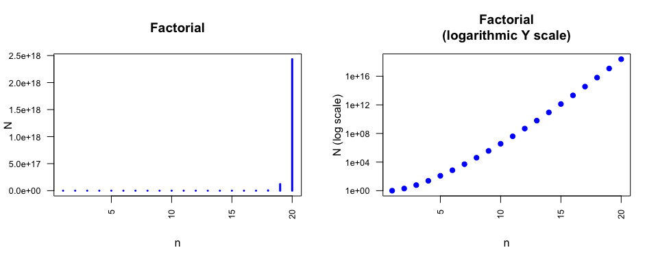

Jacques van Helden
2019-09-20
DNA is composed of 4 nucleotides denoted by the letters \(A\), \(C\), \(G\), \(T\). Proteins are made of 20 amino acids.
For each one of these two types of macromolecules, how many distinct oligomers can be formed by polymerizing 30 residues (“30-mers”) ?
Suggested approach: start by addressing a simpler form of the same problem, by starting with polymers of much smaller sizes: 1, then 2 residues, …
Generalize the formula for oligomers of an arbitrary size \(k\) (so-called k-mers in the domain), made of \(n\) distinct residues.
What is the name of the function resulting from this analysis?
In this process, which mode did you use to pick up the residues: with or without replacement?
The underlying process is a drawing with replacement: at each position of the sequence, we can choose any of the \(n\) residues (\(n=4\) for nucleotidic sequences, \(n=20\) for peptidic sequences).
Progressive approach of the solution
Trivial case: single-residue sequence \(\rightarrow\) there are exactly \(n\) possibilities.
Two-residue sequences: for each of the \(n\) possible residues at the first position, we can select \(n\) resodies for the second one \(\rightarrow\) there are \(n \cdot n = n^2\) possible dimers.
Trimers: for each of these dimers, there are \(n\) possible residues that can be chosen for the\(3^{d}\) position \(\rightarrow\) there are \(n^2 \cdot n = n^3\) distinct trinucleotides.
Generalization to \(k\)-mers: there are \(n^k\) distinct sequences of size \(k\).
In our case, the sequence size was \(k=30\). We have thus
If we consider the succession of numbers obtained for increasing oligomer sizes \(k=1, 2, \cdot\) we observe a geometric progression.
The geometric progression is a succession of numbers where each term can be computed by multiplying the previous one by a constant factor.
\[x_i = x_{i-1} \cdot n\]
For a large size of \(k\) the formula can be developed.
\[\begin{aligned} x_k &= x_{k-1} \cdot n \\ &= (x_{k-2} \cdot n) \cdot n = x_{k-2} \cdot n^2 \\ &= x_{k-3} \cdot n^3 = \ldots = x_0 \cdot n^k \end{aligned}\]
In our case, the initial value is \(x_0=1\); \(k\) denotes the oligomer size, and \(n\) is the number of distinct residues used to form the oligomer (\(n=4\) for nucleic acids, \(n=20\) for amino acids).
Number of possible oligonucleotides (top) and oligopeptides (bottom) with either a linear (left) and logarithmic (right) scale for the ordinate.
How many oligomers can be formed (DNA or peptides) that would contain exactly once each residue.
Suggested approach: progressively aggregate the residues whilst wondering, at each step, bow many residues have not yet been incorporated in the sequence.
Sub-questions:
Generalize the formula for sequences of items of any type, drawn from a set of arbitrary size \(n\).
What is the name of the corresponding function?
In this process, what is the mode of residue selection: with or without replacement?
\[n! = n \cdot (n-1) \cdot \ldots \cdot 2 \cdot 1\]
In our case:
\[N = n! = \left\{ \begin{array}{ll} 1 & \text{if } n=0 \\ n \cdot (n-1)! &\text{otherwise} \end{array} \right.\]
Note: by definition, \(0! = 1\), which enables to compute \(1!\) and the subsequent numbers with the recursive formula.
For sufficiently large values of \(n\), a clearer formulation is
\[N = n \cdot (n-1) \cdot (n-2) \ldots 2 \cdot 1\]

A transcriptome experiment has been led to define the level of expression of all the yeast genes. Knowing that the genome contains \(6000\) genes, how many possible ways are there to select the \(15\) most expressed genes with their relative order?
Suggested approach: as previously, simplify the problem by starting from the minimal selection, and progressively increase the number of selected genes (1 gene, 2 genes, …).
Complementary questions:
This is a selection without replacement (indeed, each gene appears at one and only one position in the list of all genes), and ordered (a list with the same genes taken in a different orders would be considered as a different result).
Note that this can be represented by a more compact formula.
\(N = n \cdot (n-1) \cdot (n-2) \cdot ... \cdot (n-x+1) = \frac{n!}{(n-x)!}\)
In combinatorics, the term arrangement denotes an orderless drawing without replacement, i.e. random drawing where the order of the item is taken in consideration, and where each already selected item cannot be selected as next element.
Number of arrangements of \(x\) items drawn in a set of size \(n\).
\[\begin{array}{ccl} A^x_n & = & \frac{n!}{(n - x)!} \\ & = & \frac{n(n-1) \ldots (n-x +1) (n - x) (n-x-1) \ldots 2 \cdot 1}{(n - x) (n-x-1) \ldots 2 \cdot 1} \\ & = & n \cdot (n-1) \cdot \ldots \cdot (n-x+1) \end{array} \]
A bet where players must predict the three winner horses (\(x=3\)) of a race, and the exact order of their arrival. For \(n=15\) horses, there are \(n \cdot (n-1) \cdot (n-2) = 15 \cdot 14 \cdot 13 = 2730\) possibilities.
A transcriptomics experiment has been led to measure the level of expression of all yeast genes. Knowing that the genome contains \(6000\) genes, how many possibilities are there to select the \(15\) genes with the highest expression level without taking into account the relative order of those 15 genes?
Suggested approach: as previously, simplify the problem by starting from minimal selections (1 gene, 2 genes, …) and then generalize the formula.
Complementary questions:
A combination is a selection without replacement a finite set, where the order of drawing is taken into consideration.
The number of possible combinations of \(x\) numbers among \(n\) is provided by the binomial coefficient.
\[\binom{n}{x} = C^x_n = \frac{n!}{x! (n-x)!}\]
Attention: the relative positions of \(x\) and \(n\) are opposite in the two alternative notations for combinations \(binom{n}{x}\) (“\(x\) among \(n\)”) and (\(C^x_n\), “choose”).
\[\binom{n}{x} = \binom{15}{3} = C^3_{15} = \frac{15!}{3! 12!} = 455\]
\[\binom{n}{x} = \binom{90}{6} = C^6_{90} = \frac{90!}{6! 84!} = 6.2261463\times 10^{8}\]
There are two classical ways of drawing elements among a set: with or without replacement.
Drawing without replacement: each element can be selected at most once. Examples:
Drawing with replacement: each element can be drawn zero, one or several times. Examples:
| Replacement | Order | Formula | Description |
|---|---|---|---|
| Yes | Yes | \(n^x\) | Geometric progression: ordered drawings (sequences), with replacement, of \(x\) items from a set of size \(n\) |
| No | Yes | \(n!\) | factorial: permutations of all elements of a set of size \(n\) |
| No | Yes | \(A^x_n = \frac{n!}{(n-x)!}\) | Arrangements : ordered drawing, without replacement, of \(x\) items in a set of size \(n\) |
| No | No | \(C^x_n = \binom{n}{x} = \frac{n!}{x! (n - x) !}\) | Combinations : orderless drawing, without replacement, of \(x\) items in a set of size \(n\) |
How many distinct oligopeptides of size \(k=60\) can be formed by using exactly \(3\) times each amino acid?
How many distinct oligopeptides of size \(k=60\) can be formed by using exactly \(3\) times each amino acid?
Let us start by generating a particular sequence that fits these conditions, by concatenating 3 copies of each amino acid by alphabetic order.
AAACCCDDDEEEFFFGGGHHHIIIKKKLLLMMMNNNPPPQQQRRRSSSTTTVVVWWWYYYAny permutation of these 60 letters is a valid solution. Here are three examples.
QMEYLGDMNEDPCHLDLSCWTIRKAPGYRVIHWRQSVQNSEWNFKAIGAYVFHMTCPFKTHFEICTDMTQHAQPYIRLVMEHMRCYWAGNNPKVDPISDGKTQFKWWSLVFRYASNLCGEVVLNTNPEQFEKYKHGPWASGYADRMEKCRVQADWTWITCNLLRFFSPIHQMMSHGDCYIHowever, we have to take into account that any permutation between two identical amino acids will give an identical sequence. The difficulty of the exercise will thus be to enumerate the number of distinct permutations.